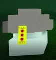

Tudo sobre os Shriekers (Molestadores de gaia)
Descrição
Zombie Scrooms (mais comumente conhecidos como Zscrooms) são inimigos encontrados no Sleeping Forest. Eles ficam na cova perto da entrada do Sleeping Forest.

informações Uteis
Zombie Scrooms são criaturas perigosas que possuem 320 de HP e podem ser facilmente cauterizadas subindo em um relevo, mas são extremamente perigosas quando em bando.
Drops
Cursed Tag (Necessário para a primeira habilidade do Druida, pode ser entregue ao NPC em Alana para o modo Caótico)
Habilidades
Elas são capazes de causar bastante dano dando cabeçadas e causam ferimentos em você quando estiver morto no chão.
Guia de como farmar xp nessas bombas
- Junte todos os zombie scrooms em uma fila.
- Aproxime-se para provocar o ataque e desvie rapidamente.
- Quando todos atacarem juntos, dê três ataques básicos (m1) neles.
- Não use mais do que três ataques para evitar ser atingido pelos zscrooms restantes.
- Se não tiver mana climbing, deixe um vivo para pular na cabeça dele.
- Leve-o até uma pequena plataforma, bloqueie o ataque com F e pule na cabeça dele.
- Corra da cabeça dele para a plataforma e evite morrer para não precisar wipar.
Notas
- Para sair, pule na cabeça de um Zombie Scroom e depois na beirada à direita (de costas para a entrada).
- Zombie Scrooms cancelam o carregamento de mana por 2 segundos, semelhante ao mana punch.
- Fazê-los para ganhar EXP é uma forma muito popular de farmar — tome cuidado com outros jogadores durante o farm.
- Apesar de aparecerem em grupos de cinco, um deles geralmente se joga do penhasco perto do ponto de spawn.
- Leva aproximadamente 8 combos completos de M1 com o talento Trained Combat (ou se você for um Ashiin) para matar um Zombie Scroom.
- Uma tática viável para farmar é entrar e sair de servidores para acelerar os encontros com Zombie Scrooms. Mas isso pode não funcionar sempre.
- Você também pode escalar em direção à entrada da Sleeping Forest, logo após a árvore onde fica o buraco dos Zombie Scrooms, para fazê-los respawnar. Isso pode bugar se alguém já estiver no buraco.
- Tome muito cuidado — ser atacado por muitos de uma vez pode causar stun infinito, impedindo que você fuja ou contra-ataque. (Se isso acontecer, spamme Q, segure S e tente pular em uma plataforma.)
- Como eles só têm um tipo de ataque, se você estiver em estado crítico e eles subirem na sua plataforma, apenas bloqueie os ataques.
- Zombie Scrooms podem arrancar seu braço, assim como os Shriekers.
- Zombie Scrooms podem ser trancados por Azaleans ou de outras formas.
- Na nova atualização, há degraus para subir e sair do buraco.
- A cor da mana deles, assim como a dos Shriekers, é vermelha.
- Se você estiver farmando com uma adaga, acerte 4 vezes — se fizer o ataque final, sofrerá atraso e pode ser atingido por outros Zombie Scrooms.
- A imagem mostra o gatilho de spawn dos Zombie Scrooms.
- São necessárias 40 pancadas com a Bronze Sword para matar um Zombie Scroom.
- Zombie Scrooms são uma referência a um inimigo do MapleStory chamado Zombie Mushroom.
- Não tente farmar com o encantamento Ruby — ele basicamente faz você perder toda a EXP deles.
- Se estiver usando socos, lute com no máximo 2 Zombie Scrooms por vez para evitar ser atingido pelos outros ao redor.
- Zombie Scrooms sobrepostos podem bugar e subir para a plataforma.
- Devido ao stun longo, dois Zombie Scrooms atacando no tempo certo podem significar morte.